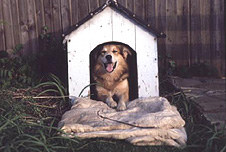

In the doghouse
Feifei: Hi Rob. Nice to see you here in the park with this lovely dog.
| (Dog barks) |
| Rob: | Hi Feifei. Yes, this is Fido. As they say, dog is a man's best friend and ... he is my best friend. I'm taking him for a walk. But we have to get back home soon. |
| Feifei: | Why Rob? I was going to ask if you wanted a coffee ... |
| Rob: | Thank you, Feifei, but I can't. I love walking Fido and sometimes I forget to look at my watch. I keep coming home late for dinner and the family is annoyed because the food gets cold. I'm in the doghouse at the moment. |
| Feifei: | You are in the doghouse?! That's terrible, Rob! How can you say your dog is your best friend if you kick him out of his own house? |
| (Dog barks) |
| Rob: | No, no, it's not that ... |
| Feifei: | Now this poor dog will be left out in the cold, in the rain ... Poor Fido! If you are in the doghouse, where does this lovely dog sleep? |
| Rob: | Well, Fido sleeps where he always does: in the doghouse. But in English, we can say someone is 'in the doghouse' if they've annoyed another person. |
| Feifei: | So your family is annoyed with you because you were inconsiderate to them. |
| Rob: | That's right. 'In the doghouse' is the expression you'll learn in today's The English We Speak. Let's hear some examples. |
| President Bill Clinton said he was "in the doghouse" after the revelations about his affair with Monica Lewinsky. His wife even considered leaving him. |
| My mother is furious with me. I forgot to do my homework again so I'm in the doghouse. |
| Feifei: | So if you go home on time for dinner, you won't be in the doghouse anymore. |
| Rob: | That's what I hope.
|
| (Cat meows) |
| (Dog barks) |
| Feifei: | Then maybe you'd better hold onto the lead and control Fido. |
| Rob: | Come on Fido! Quiet. Calm down, boy. Ignore that cat. |
| (Dog growls) |
| Feifei: | Oh, come on, Fido, quiet or you'll be in the doghouse. |
| (Dog barks) |
| Rob: | Come on, Fido! Come on, boy! Who is a good boy? Come on! Get out of here, you cheeky cat! |
| Rob: | Bye. |
| Feifei: | Bye. |
| Cat: | Meow. |